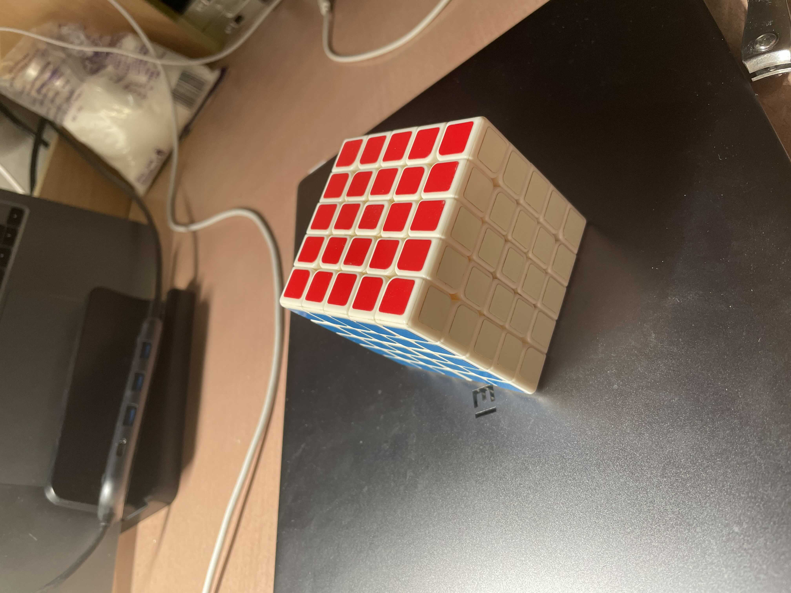

DreamBooth
- [toc]
前言
这一部分主要聚焦如何控制一个固定物体在生成过程中出现, 并且细节也很到位, 这里的复现工作基于google的文章“DreamBooth: Fine Tuning Text-to-Image Diffusion Models for Subject-Driven Generation” , 代码则基于https://github.com/XavierXiao/Dreambooth-Stable-Diffusion, 这是基于stable-diffusion的实现。
我们在这里期望做到以下几点:
- 复现代码和文章, 看看效果
- 对比finetune前后的模型, 哪些参数改变比较大?
- 正则化对其他类型的生成有多大影响?
- 尝试fix住一部分参数的效果
- 思考如何使用参数高效微调。
复现和熟悉过程
话不多说, 直接上命令。
git clone git@github.com:Xiang-cd/Dreambooth-Stable-Diffusion.git
conda env create -f environment.yaml
conda activate ldm
接下来需要下载模型, 这里需要如下命令, 并且需要huggingface的账户, 运行后输入密码即可, 随后会开始下载, 请记住你下载的路径:
wget https://huggingface.co/CompVis/stable-diffusion-v-1-4-original/resolve/main/sd-v1-4-full-ema.ckpt --user=Xiang-cd --ask-password
https://huggingface.co/CompVis/stable-diffusion-v-1-4-original/resolve/main/sd-v1-4.ckpt
根据文章, 为了正则化模型, 首先会让模型生成很多的同类图片, 需要指定种类, 例如你希望你家的狗(一只特定的狗), 准确的被生成, 但同时又希望同时保持生成其他种类的狗的能力, 所以你需要准备很多其他狗的照片, 在finetune的过程中同时设置相应loss, 保持模型生成其他狗的能力, 所以, 我们调动生成器, 进行生成。
第一步我们使用狗作为正则化的图片。
python scripts/stable_txt2img.py \
--ddim_eta 0.0 --n_samples 2 --n_iter 100 \
--scale 10.0 --ddim_steps 50 \
--ckpt /mfs/xiangchendong19/stable-diffusion-ckpt/sd-v1-4-full-ema.ckpt \
--prompt "a photo of a dog" \
--outdir /home/xiangchendong19/Dreambooth-Stable-Diffusion/data/xiaoyang/reg_dog
魔方其实在stable diffusion的生成中其实没有很好的效果, 我们想看看, 如果利用finetune的方法, 能不能至少生成一个像样的魔方。
python scripts/stable_txt2img.py \
--ddim_eta 0.0 --n_samples 2 --n_iter 100 \
--scale 10.0 --ddim_steps 50 \
--ckpt /mfs/xiangchendong19/stable-diffusion-ckpt/sd-v1-4-full-ema.ckpt \
--prompt "a photo of a magic cube" \
--outdir /home/xiangchendong19/Dreambooth-Stable-Diffusion/data/cube/reg_cube
第二步, 同时我们可以进行finetune, 因为文件系统磁盘的原因, 把输出的模型参数的位置改了一下, 具体的脚本含义看源代码仓库的readme就可以:
python main.py \
--base configs/stable-diffusion/v1-finetune_unfrozen.yaml \
-t \
--actual_resume ~/stable-diffusion-ckpt/sd-v1-4-full-ema.ckpt \
-n xiaoyang \
--gpus 0, \
--data_root ~/Dreambooth-Stable-Diffusion/data/xiaoyang/example \
--reg_data_root ~/Dreambooth-Stable-Diffusion/data/xiaoyang/reg_dog/samples \
--class_word dog \
--logdir ~/DreamBoothlog
python main.py \
--base configs/stable-diffusion/v1-finetune_unfrozen.yaml \
-t \
--actual_resume ~/stable-diffusion-ckpt/sd-v1-4-full-ema.ckpt \
-n cube \
--gpus 0, \
--data_root ~/Dreambooth-Stable-Diffusion/data/cube/example \
--reg_data_root ~/Dreambooth-Stable-Diffusion/data/cube/reg_cube/samples \
--class_word "magic cube"
第三步, 生成
python scripts/stable_txt2img.py \
--ddim_eta 0.0 \
--n_samples 4 \
--n_iter 1 \
--scale 10.0 \
--ddim_steps 100 \
--ckpt ~/Dreambooth-Stable-Diffusion/logs/example2022-10-31T16-56-41_xiaoyang/checkpoints/last.ckpt \
--prompt "photo of a sks dog"
python scripts/stable_txt2img.py \
--ddim_eta 0.0 \
--n_samples 4 \
--n_iter 1 \
--scale 10.0 \
--ddim_steps 100 \
--ckpt /mfs/xiangchendong19/stable-diffusion-ckpt/cube.ckpt \
--prompt "photo of a sks magic cube"
粗读代码
同理, 我们来看看代码的实现是怎么样来进行训练的吧!
# load 一些包
import argparse, os, sys, datetime, glob, importlib, csv
import numpy as np
import time
import torch
import torchvision
import pytorch_lightning as pl
from packaging import version
from omegaconf import OmegaConf
from torch.utils.data import random_split, DataLoader, Dataset, Subset
from functools import partial
from PIL import Image
from pytorch_lightning import seed_everything
from pytorch_lightning.trainer import Trainer
from pytorch_lightning.callbacks import ModelCheckpoint, Callback, LearningRateMonitor
from pytorch_lightning.utilities.distributed import rank_zero_only
from pytorch_lightning.utilities import rank_zero_info
from ldm.data.base import Txt2ImgIterableBaseDataset
from ldm.util import instantiate_from_config
# 依据config文件, 从ckpt路径中加载模型
def load_model_from_config(config, ckpt, verbose=False):
print(f"Loading model from {ckpt}")
pl_sd = torch.load(ckpt, map_location="cpu")
sd = pl_sd["state_dict"]
config.model.params.ckpt_path = ckpt
model = instantiate_from_config(config.model)
m, u = model.load_state_dict(sd, strict=False)
if len(m) > 0 and verbose:
print("missing keys:")
print(m)
if len(u) > 0 and verbose:
print("unexpected keys:")
print(u)
model.cuda()
return model
def get_parser(**parser_kwargs):
def str2bool(v):
if isinstance(v, bool):
return v
if v.lower() in ("yes", "true", "t", "y", "1"):
return True
elif v.lower() in ("no", "false", "f", "n", "0"):
return False
else:
raise argparse.ArgumentTypeError("Boolean value expected.")
parser = argparse.ArgumentParser(**parser_kwargs)
parser.add_argument(
"-n",
"--name",
type=str,
const=True,
default="",
nargs="?",
help="postfix for logdir",
)
parser.add_argument(
"-r",
"--resume",
type=str,
const=True,
default="",
nargs="?",
help="resume from logdir or checkpoint in logdir",
)
parser.add_argument(
"-b",
"--base",
nargs="*",
metavar="base_config.yaml",
help="paths to base configs. Loaded from left-to-right. "
"Parameters can be overwritten or added with command-line options of the form `--key value`.",
default=list(),
)
parser.add_argument(
"-t",
"--train",
type=str2bool,
const=True,
default=False,
nargs="?",
help="train",
)
parser.add_argument(
"--no-test",
type=str2bool,
const=True,
default=False,
nargs="?",
help="disable test",
)
parser.add_argument(
"-p",
"--project",
help="name of new or path to existing project"
)
parser.add_argument(
"-d",
"--debug",
type=str2bool,
nargs="?",
const=True,
default=False,
help="enable post-mortem debugging",
)
parser.add_argument(
"-s",
"--seed",
type=int,
default=23,
help="seed for seed_everything",
)
parser.add_argument(
"-f",
"--postfix",
type=str,
default="",
help="post-postfix for default name",
)
parser.add_argument(
"-l",
"--logdir",
type=str,
default="logs",
help="directory for logging dat shit",
)
parser.add_argument(
"--scale_lr",
type=str2bool,
nargs="?",
const=False,
default=False,
help="scale base-lr by ngpu * batch_size * n_accumulate",
)
parser.add_argument(
"--datadir_in_name",
type=str2bool,
nargs="?",
const=True,
default=True,
help="Prepend the final directory in the data_root to the output directory name")
parser.add_argument("--actual_resume",
type=str,
required=True,
help="Path to model to actually resume from")
parser.add_argument("--data_root",
type=str,
required=True,
help="Path to directory with training images")
parser.add_argument("--reg_data_root",
type=str,
required=True,
help="Path to directory with regularization images")
parser.add_argument("--embedding_manager_ckpt",
type=str,
default="",
help="Initialize embedding manager from a checkpoint")
parser.add_argument("--class_word",
type=str,
default="dog",
help="Placeholder token which will be used to denote the concept in future prompts")
parser.add_argument("--init_word",
type=str,
help="Word to use as source for initial token embedding")
return parser
def nondefault_trainer_args(opt):
parser = argparse.ArgumentParser()
parser = Trainer.add_argparse_args(parser)
args = parser.parse_args([])
return sorted(k for k in vars(args) if getattr(opt, k) != getattr(args, k))
class WrappedDataset(Dataset):
"""Wraps an arbitrary object with __len__ and __getitem__ into a pytorch dataset"""
def __init__(self, dataset):
self.data = dataset
def __len__(self):
return len(self.data)
def __getitem__(self, idx):
return self.data[idx]
def worker_init_fn(_):
worker_info = torch.utils.data.get_worker_info()
dataset = worker_info.dataset
worker_id = worker_info.id
if isinstance(dataset, Txt2ImgIterableBaseDataset):
split_size = dataset.num_records // worker_info.num_workers
# reset num_records to the true number to retain reliable length information
dataset.sample_ids = dataset.valid_ids[worker_id * split_size:(worker_id + 1) * split_size]
current_id = np.random.choice(len(np.random.get_state()[1]), 1)
return np.random.seed(np.random.get_state()[1][current_id] + worker_id)
else:
return np.random.seed(np.random.get_state()[1][0] + worker_id)
class ConcatDataset(Dataset):
def __init__(self, *datasets):
self.datasets = datasets
def __getitem__(self, idx):
return tuple(d[idx] for d in self.datasets)
def __len__(self):
return min(len(d) for d in self.datasets)
class DataModuleFromConfig(pl.LightningDataModule):
def __init__(self, batch_size, train=None, reg = None, validation=None, test=None, predict=None,
wrap=False, num_workers=None, shuffle_test_loader=False, use_worker_init_fn=False,
shuffle_val_dataloader=False):
super().__init__()
self.batch_size = batch_size
self.dataset_configs = dict()
self.num_workers = num_workers if num_workers is not None else batch_size * 2
self.use_worker_init_fn = use_worker_init_fn
if train is not None:
self.dataset_configs["train"] = train
if reg is not None:
self.dataset_configs["reg"] = reg
self.train_dataloader = self._train_dataloader
if validation is not None:
self.dataset_configs["validation"] = validation
self.val_dataloader = partial(self._val_dataloader, shuffle=shuffle_val_dataloader)
if test is not None:
self.dataset_configs["test"] = test
self.test_dataloader = partial(self._test_dataloader, shuffle=shuffle_test_loader)
if predict is not None:
self.dataset_configs["predict"] = predict
self.predict_dataloader = self._predict_dataloader
self.wrap = wrap
def prepare_data(self):
for data_cfg in self.dataset_configs.values():
instantiate_from_config(data_cfg)
def setup(self, stage=None):
self.datasets = dict(
(k, instantiate_from_config(self.dataset_configs[k]))
for k in self.dataset_configs)
if self.wrap:
for k in self.datasets:
self.datasets[k] = WrappedDataset(self.datasets[k])
def _train_dataloader(self):
is_iterable_dataset = isinstance(self.datasets['train'], Txt2ImgIterableBaseDataset)
if is_iterable_dataset or self.use_worker_init_fn:
init_fn = worker_init_fn
else:
init_fn = None
train_set = self.datasets["train"]
reg_set = self.datasets["reg"]
concat_dataset = ConcatDataset(train_set, reg_set)
return DataLoader(concat_dataset, batch_size=self.batch_size,
num_workers=self.num_workers, shuffle=False if is_iterable_dataset else True,
worker_init_fn=init_fn)
def _val_dataloader(self, shuffle=False):
if isinstance(self.datasets['validation'], Txt2ImgIterableBaseDataset) or self.use_worker_init_fn:
init_fn = worker_init_fn
else:
init_fn = None
return DataLoader(self.datasets["validation"],
batch_size=self.batch_size,
num_workers=self.num_workers,
worker_init_fn=init_fn,
shuffle=shuffle)
def _test_dataloader(self, shuffle=False):
is_iterable_dataset = isinstance(self.datasets['train'], Txt2ImgIterableBaseDataset)
if is_iterable_dataset or self.use_worker_init_fn:
init_fn = worker_init_fn
else:
init_fn = None
# do not shuffle dataloader for iterable dataset
shuffle = shuffle and (not is_iterable_dataset)
return DataLoader(self.datasets["test"], batch_size=self.batch_size,
num_workers=self.num_workers, worker_init_fn=init_fn, shuffle=shuffle)
def _predict_dataloader(self, shuffle=False):
if isinstance(self.datasets['predict'], Txt2ImgIterableBaseDataset) or self.use_worker_init_fn:
init_fn = worker_init_fn
else:
init_fn = None
return DataLoader(self.datasets["predict"], batch_size=self.batch_size,
num_workers=self.num_workers, worker_init_fn=init_fn)
class SetupCallback(Callback):
def __init__(self, resume, now, logdir, ckptdir, cfgdir, config, lightning_config):
super().__init__()
self.resume = resume
self.now = now
self.logdir = logdir
self.ckptdir = ckptdir
self.cfgdir = cfgdir
self.config = config
self.lightning_config = lightning_config
def on_keyboard_interrupt(self, trainer, pl_module):
if trainer.global_rank == 0:
print("Summoning checkpoint.")
ckpt_path = os.path.join(self.ckptdir, "last.ckpt")
trainer.save_checkpoint(ckpt_path)
def on_pretrain_routine_start(self, trainer, pl_module):
if trainer.global_rank == 0:
# Create logdirs and save configs
os.makedirs(self.logdir, exist_ok=True)
os.makedirs(self.ckptdir, exist_ok=True)
os.makedirs(self.cfgdir, exist_ok=True)
if "callbacks" in self.lightning_config:
if 'metrics_over_trainsteps_checkpoint' in self.lightning_config['callbacks']:
os.makedirs(os.path.join(self.ckptdir, 'trainstep_checkpoints'), exist_ok=True)
print("Project config")
print(OmegaConf.to_yaml(self.config))
OmegaConf.save(self.config,
os.path.join(self.cfgdir, "{}-project.yaml".format(self.now)))
print("Lightning config")
print(OmegaConf.to_yaml(self.lightning_config))
OmegaConf.save(OmegaConf.create({"lightning": self.lightning_config}),
os.path.join(self.cfgdir, "{}-lightning.yaml".format(self.now)))
else:
# ModelCheckpoint callback created log directory --- remove it
if not self.resume and os.path.exists(self.logdir):
dst, name = os.path.split(self.logdir)
dst = os.path.join(dst, "child_runs", name)
os.makedirs(os.path.split(dst)[0], exist_ok=True)
try:
os.rename(self.logdir, dst)
except FileNotFoundError:
pass
class ImageLogger(Callback):
def __init__(self, batch_frequency, max_images, clamp=True, increase_log_steps=True,
rescale=True, disabled=False, log_on_batch_idx=False, log_first_step=False,
log_images_kwargs=None):
super().__init__()
self.rescale = rescale
self.batch_freq = batch_frequency
self.max_images = max_images
self.logger_log_images = {
pl.loggers.TestTubeLogger: self._testtube,
}
self.log_steps = [2 ** n for n in range(int(np.log2(self.batch_freq)) + 1)]
if not increase_log_steps:
self.log_steps = [self.batch_freq]
self.clamp = clamp
self.disabled = disabled
self.log_on_batch_idx = log_on_batch_idx
self.log_images_kwargs = log_images_kwargs if log_images_kwargs else {}
self.log_first_step = log_first_step
@rank_zero_only
def _testtube(self, pl_module, images, batch_idx, split):
for k in images:
grid = torchvision.utils.make_grid(images[k])
grid = (grid + 1.0) / 2.0 # -1,1 -> 0,1; c,h,w
tag = f"{split}/{k}"
pl_module.logger.experiment.add_image(
tag, grid,
global_step=pl_module.global_step)
@rank_zero_only
def log_local(self, save_dir, split, images,
global_step, current_epoch, batch_idx):
root = os.path.join(save_dir, "images", split)
for k in images:
grid = torchvision.utils.make_grid(images[k], nrow=4)
if self.rescale:
grid = (grid + 1.0) / 2.0 # -1,1 -> 0,1; c,h,w
grid = grid.transpose(0, 1).transpose(1, 2).squeeze(-1)
grid = grid.numpy()
grid = (grid * 255).astype(np.uint8)
filename = "{}_gs-{:06}_e-{:06}_b-{:06}.jpg".format(
k,
global_step,
current_epoch,
batch_idx)
path = os.path.join(root, filename)
os.makedirs(os.path.split(path)[0], exist_ok=True)
Image.fromarray(grid).save(path)
def log_img(self, pl_module, batch, batch_idx, split="train"):
check_idx = batch_idx if self.log_on_batch_idx else pl_module.global_step
if (self.check_frequency(check_idx) and # batch_idx % self.batch_freq == 0
hasattr(pl_module, "log_images") and
callable(pl_module.log_images) and
self.max_images > 0):
logger = type(pl_module.logger)
is_train = pl_module.training
if is_train:
pl_module.eval()
with torch.no_grad():
images = pl_module.log_images(batch, split=split, **self.log_images_kwargs)
for k in images:
N = min(images[k].shape[0], self.max_images)
images[k] = images[k][:N]
if isinstance(images[k], torch.Tensor):
images[k] = images[k].detach().cpu()
if self.clamp:
images[k] = torch.clamp(images[k], -1., 1.)
self.log_local(pl_module.logger.save_dir, split, images,
pl_module.global_step, pl_module.current_epoch, batch_idx)
logger_log_images = self.logger_log_images.get(logger, lambda *args, **kwargs: None)
logger_log_images(pl_module, images, pl_module.global_step, split)
if is_train:
pl_module.train()
def check_frequency(self, check_idx):
if ((check_idx % self.batch_freq) == 0 or (check_idx in self.log_steps)) and (
check_idx > 0 or self.log_first_step):
try:
self.log_steps.pop(0)
except IndexError as e:
print(e)
pass
return True
return False
def on_train_batch_end(self, trainer, pl_module, outputs, batch, batch_idx, dataloader_idx):
if not self.disabled and (pl_module.global_step > 0 or self.log_first_step):
self.log_img(pl_module, batch, batch_idx, split="train")
def on_validation_batch_end(self, trainer, pl_module, outputs, batch, batch_idx, dataloader_idx):
if not self.disabled and pl_module.global_step > 0:
self.log_img(pl_module, batch, batch_idx, split="val")
if hasattr(pl_module, 'calibrate_grad_norm'):
if (pl_module.calibrate_grad_norm and batch_idx % 25 == 0) and batch_idx > 0:
self.log_gradients(trainer, pl_module, batch_idx=batch_idx)
class CUDACallback(Callback):
# see https://github.com/SeanNaren/minGPT/blob/master/mingpt/callback.py
def on_train_epoch_start(self, trainer, pl_module):
# Reset the memory use counter
torch.cuda.reset_peak_memory_stats(trainer.root_gpu)
torch.cuda.synchronize(trainer.root_gpu)
self.start_time = time.time()
def on_train_epoch_end(self, trainer, pl_module):
torch.cuda.synchronize(trainer.root_gpu)
max_memory = torch.cuda.max_memory_allocated(trainer.root_gpu) / 2 ** 20
epoch_time = time.time() - self.start_time
try:
max_memory = trainer.training_type_plugin.reduce(max_memory)
epoch_time = trainer.training_type_plugin.reduce(epoch_time)
rank_zero_info(f"Average Epoch time: {epoch_time:.2f} seconds")
rank_zero_info(f"Average Peak memory {max_memory:.2f}MiB")
except AttributeError:
pass
class ModeSwapCallback(Callback):
def __init__(self, swap_step=2000):
super().__init__()
self.is_frozen = False
self.swap_step = swap_step
def on_train_epoch_start(self, trainer, pl_module):
if trainer.global_step < self.swap_step and not self.is_frozen:
self.is_frozen = True
trainer.optimizers = [pl_module.configure_opt_embedding()]
if trainer.global_step > self.swap_step and self.is_frozen:
self.is_frozen = False
trainer.optimizers = [pl_module.configure_opt_model()]
if __name__ == "__main__":
# custom parser to specify config files, train, test and debug mode,
# postfix, resume.
# `--key value` arguments are interpreted as arguments to the trainer.
# `nested.key=value` arguments are interpreted as config parameters.
# configs are merged from left-to-right followed by command line parameters.
# model:
# base_learning_rate: float
# target: path to lightning module
# params:
# key: value
# data:
# target: main.DataModuleFromConfig
# params:
# batch_size: int
# wrap: bool
# train:
# target: path to train dataset
# params:
# key: value
# validation:
# target: path to validation dataset
# params:
# key: value
# test:
# target: path to test dataset
# params:
# key: value
# lightning: (optional, has sane defaults and can be specified on cmdline)
# trainer:
# additional arguments to trainer
# logger:
# logger to instantiate
# modelcheckpoint:
# modelcheckpoint to instantiate
# callbacks:
# callback1:
# target: importpath
# params:
# key: value
now = datetime.datetime.now().strftime("%Y-%m-%dT%H-%M-%S")
# add cwd for convenience and to make classes in this file available when
# running as `python main.py`
# (in particular `main.DataModuleFromConfig`)
sys.path.append(os.getcwd())
parser = get_parser()
parser = Trainer.add_argparse_args(parser)
opt, unknown = parser.parse_known_args()
if opt.name and opt.resume:
raise ValueError(
"-n/--name and -r/--resume cannot be specified both."
"If you want to resume training in a new log folder, "
"use -n/--name in combination with --resume_from_checkpoint"
)
if opt.resume:
if not os.path.exists(opt.resume):
raise ValueError("Cannot find {}".format(opt.resume))
if os.path.isfile(opt.resume):
paths = opt.resume.split("/")
# idx = len(paths)-paths[::-1].index("logs")+1
# logdir = "/".join(paths[:idx])
logdir = "/".join(paths[:-2])
ckpt = opt.resume
else:
assert os.path.isdir(opt.resume), opt.resume
logdir = opt.resume.rstrip("/")
ckpt = os.path.join(logdir, "checkpoints", "last.ckpt")
opt.resume_from_checkpoint = ckpt
base_configs = sorted(glob.glob(os.path.join(logdir, "configs/*.yaml")))
opt.base = base_configs + opt.base
_tmp = logdir.split("/")
nowname = _tmp[-1]
else:
if opt.name:
name = "_" + opt.name
elif opt.base:
cfg_fname = os.path.split(opt.base[0])[-1]
cfg_name = os.path.splitext(cfg_fname)[0]
name = "_" + cfg_name
else:
name = ""
if opt.datadir_in_name:
now = os.path.basename(os.path.normpath(opt.data_root)) + now
nowname = now + name + opt.postfix
logdir = os.path.join(opt.logdir, nowname)
ckptdir = os.path.join(logdir, "checkpoints")
cfgdir = os.path.join(logdir, "configs")
seed_everything(opt.seed)
try:
# init and save configs
configs = [OmegaConf.load(cfg) for cfg in opt.base]
cli = OmegaConf.from_dotlist(unknown)
config = OmegaConf.merge(*configs, cli)
lightning_config = config.pop("lightning", OmegaConf.create())
# merge trainer cli with config
trainer_config = lightning_config.get("trainer", OmegaConf.create())
# default to ddp
trainer_config["accelerator"] = "ddp"
for k in nondefault_trainer_args(opt):
trainer_config[k] = getattr(opt, k)
if not "gpus" in trainer_config:
del trainer_config["accelerator"]
cpu = True
else:
gpuinfo = trainer_config["gpus"]
print(f"Running on GPUs {gpuinfo}")
cpu = False
trainer_opt = argparse.Namespace(**trainer_config)
lightning_config.trainer = trainer_config
# model
# config.model.params.personalization_config.params.init_word = opt.init_word
# config.model.params.personalization_config.params.embedding_manager_ckpt = opt.embedding_manager_ckpt
# config.model.params.personalization_config.params.placeholder_tokens = opt.placeholder_tokens
# if opt.init_word:
# config.model.params.personalization_config.params.initializer_words[0] = opt.init_word
config.data.params.train.params.placeholder_token = opt.class_word
config.data.params.reg.params.placeholder_token = opt.class_word
config.data.params.validation.params.placeholder_token = opt.class_word
if opt.actual_resume:
model = load_model_from_config(config, opt.actual_resume)
else:
model = instantiate_from_config(config.model)
# trainer and callbacks
trainer_kwargs = dict()
# default logger configs
default_logger_cfgs = {
"wandb": {
"target": "pytorch_lightning.loggers.WandbLogger",
"params": {
"name": nowname,
"save_dir": logdir,
"offline": opt.debug,
"id": nowname,
}
},
"testtube": {
"target": "pytorch_lightning.loggers.TestTubeLogger",
"params": {
"name": "testtube",
"save_dir": logdir,
}
},
}
default_logger_cfg = default_logger_cfgs["testtube"]
if "logger" in lightning_config:
logger_cfg = lightning_config.logger
else:
logger_cfg = OmegaConf.create()
logger_cfg = OmegaConf.merge(default_logger_cfg, logger_cfg)
trainer_kwargs["logger"] = instantiate_from_config(logger_cfg)
# modelcheckpoint - use TrainResult/EvalResult(checkpoint_on=metric) to
# specify which metric is used to determine best models
default_modelckpt_cfg = {
"target": "pytorch_lightning.callbacks.ModelCheckpoint",
"params": {
"dirpath": ckptdir,
"filename": "{epoch:06}",
"verbose": True,
"save_last": True,
}
}
if hasattr(model, "monitor"):
print(f"Monitoring {model.monitor} as checkpoint metric.")
default_modelckpt_cfg["params"]["monitor"] = model.monitor
default_modelckpt_cfg["params"]["save_top_k"] = 1
if "modelcheckpoint" in lightning_config:
modelckpt_cfg = lightning_config.modelcheckpoint
else:
modelckpt_cfg = OmegaConf.create()
modelckpt_cfg = OmegaConf.merge(default_modelckpt_cfg, modelckpt_cfg)
print(f"Merged modelckpt-cfg: \n{modelckpt_cfg}")
if version.parse(pl.__version__) < version.parse('1.4.0'):
trainer_kwargs["checkpoint_callback"] = instantiate_from_config(modelckpt_cfg)
# add callback which sets up log directory
default_callbacks_cfg = {
"setup_callback": {
"target": "main.SetupCallback",
"params": {
"resume": opt.resume,
"now": now,
"logdir": logdir,
"ckptdir": ckptdir,
"cfgdir": cfgdir,
"config": config,
"lightning_config": lightning_config,
}
},
"image_logger": {
"target": "main.ImageLogger",
"params": {
"batch_frequency": 750,
"max_images": 4,
"clamp": True
}
},
"learning_rate_logger": {
"target": "main.LearningRateMonitor",
"params": {
"logging_interval": "step",
# "log_momentum": True
}
},
"cuda_callback": {
"target": "main.CUDACallback"
},
}
if version.parse(pl.__version__) >= version.parse('1.4.0'):
default_callbacks_cfg.update({'checkpoint_callback': modelckpt_cfg})
if "callbacks" in lightning_config:
callbacks_cfg = lightning_config.callbacks
else:
callbacks_cfg = OmegaConf.create()
if 'metrics_over_trainsteps_checkpoint' in callbacks_cfg:
print(
'Caution: Saving checkpoints every n train steps without deleting. This might require some free space.')
default_metrics_over_trainsteps_ckpt_dict = {
'metrics_over_trainsteps_checkpoint':
{"target": 'pytorch_lightning.callbacks.ModelCheckpoint',
'params': {
"dirpath": os.path.join(ckptdir, 'trainstep_checkpoints'),
"filename": "{epoch:06}-{step:09}",
"verbose": True,
'save_top_k': -1,
'every_n_train_steps': 10000,
'save_weights_only': True
}
}
}
default_callbacks_cfg.update(default_metrics_over_trainsteps_ckpt_dict)
callbacks_cfg = OmegaConf.merge(default_callbacks_cfg, callbacks_cfg)
if 'ignore_keys_callback' in callbacks_cfg and hasattr(trainer_opt, 'resume_from_checkpoint'):
callbacks_cfg.ignore_keys_callback.params['ckpt_path'] = trainer_opt.resume_from_checkpoint
elif 'ignore_keys_callback' in callbacks_cfg:
del callbacks_cfg['ignore_keys_callback']
trainer_kwargs["callbacks"] = [instantiate_from_config(callbacks_cfg[k]) for k in callbacks_cfg]
trainer_kwargs["max_steps"] = trainer_opt.max_steps
trainer = Trainer.from_argparse_args(trainer_opt, **trainer_kwargs)
trainer.logdir = logdir ###
# data
config.data.params.train.params.data_root = opt.data_root
config.data.params.reg.params.data_root = opt.reg_data_root
config.data.params.validation.params.data_root = opt.data_root
data = instantiate_from_config(config.data)
data = instantiate_from_config(config.data)
# NOTE according to https://pytorch-lightning.readthedocs.io/en/latest/datamodules.html
# calling these ourselves should not be necessary but it is.
# lightning still takes care of proper multiprocessing though
data.prepare_data()
data.setup()
print("#### Data #####")
for k in data.datasets:
print(f"{k}, {data.datasets[k].__class__.__name__}, {len(data.datasets[k])}")
# configure learning rate
bs, base_lr = config.data.params.batch_size, config.model.base_learning_rate
if not cpu:
ngpu = len(lightning_config.trainer.gpus.strip(",").split(','))
else:
ngpu = 1
if 'accumulate_grad_batches' in lightning_config.trainer:
accumulate_grad_batches = lightning_config.trainer.accumulate_grad_batches
else:
accumulate_grad_batches = 1
print(f"accumulate_grad_batches = {accumulate_grad_batches}")
lightning_config.trainer.accumulate_grad_batches = accumulate_grad_batches
if opt.scale_lr:
model.learning_rate = accumulate_grad_batches * ngpu * bs * base_lr
print(
"Setting learning rate to {:.2e} = {} (accumulate_grad_batches) * {} (num_gpus) * {} (batchsize) * {:.2e} (base_lr)".format(
model.learning_rate, accumulate_grad_batches, ngpu, bs, base_lr))
else:
model.learning_rate = base_lr
print("++++ NOT USING LR SCALING ++++")
print(f"Setting learning rate to {model.learning_rate:.2e}")
# allow checkpointing via USR1
def melk(*args, **kwargs):
# run all checkpoint hooks
if trainer.global_rank == 0:
print("Summoning checkpoint.")
ckpt_path = os.path.join(ckptdir, "last.ckpt")
trainer.save_checkpoint(ckpt_path)
def divein(*args, **kwargs):
if trainer.global_rank == 0:
import pudb;
pudb.set_trace()
import signal
signal.signal(signal.SIGUSR1, melk)
signal.signal(signal.SIGUSR2, divein)
# run
if opt.train:
try:
trainer.fit(model, data)
except Exception:
melk()
raise
if not opt.no_test and not trainer.interrupted:
trainer.test(model, data)
except Exception:
if opt.debug and trainer.global_rank == 0:
try:
import pudb as debugger
except ImportError:
import pdb as debugger
debugger.post_mortem()
raise
finally:
# move newly created debug project to debug_runs
if opt.debug and not opt.resume and trainer.global_rank == 0:
dst, name = os.path.split(logdir)
dst = os.path.join(dst, "debug_runs", name)
os.makedirs(os.path.split(dst)[0], exist_ok=True)
os.rename(logdir, dst)
if trainer.global_rank == 0:
print(trainer.profiler.summary())
复现结果
小羊
小羊是一只可爱的萨摩耶犬, 我们希望利用模型和dreambooth的方法看看能否复现小羊的样子。
原图
 |
 |
 |
 |
生成
finetune前后dog对比
python scripts/stable_txt2img.py \
--ddim_eta 0.0 --n_samples 2 --n_iter 100 \
--scale 10.0 --ddim_steps 50 \
--ckpt /mfs/xiangchendong19/stable-diffusion-ckpt/xiaoyang.ckpt \
--prompt "a photo of a dog" \
--outdir /home/xiangchendong19/Dreambooth-Stable-Diffusion/data/xiaoyang/after_tune_dog
# default seed 42
选择0, 5, 9, 10 这四张图片
前
后
 |
|
|---|---|
生成其他内容
python scripts/stable_txt2img.py \
--ddim_eta 0.0 --n_samples 2 --n_iter 2 \
--scale 10.0 --ddim_steps 50 \
--ckpt /mfs/xiangchendong19/stable-diffusion-ckpt/xiaoyang.ckpt \
--prompt "a photo of a cat sitting on a green car" \
--outdir /home/xiangchendong19/Dreambooth-Stable-Diffusion/data/xiaoyang/others
after finetune
“a photo of a cat sitting on a green car”, seed = 42
before finetune
“a photo of a cat sitting on a green car”, seed = 42
magic cube
原图
 |
 |
 |
|---|---|---|
|  |
生成
结论
- 进行finetune能够使得模型捕捉到我们提供的物体的特征
- 进行finetune对于原来的生成效果有一定的折扣。
- finetune比较快, 800步迭代
- 每个物体都需要12G的ckpt